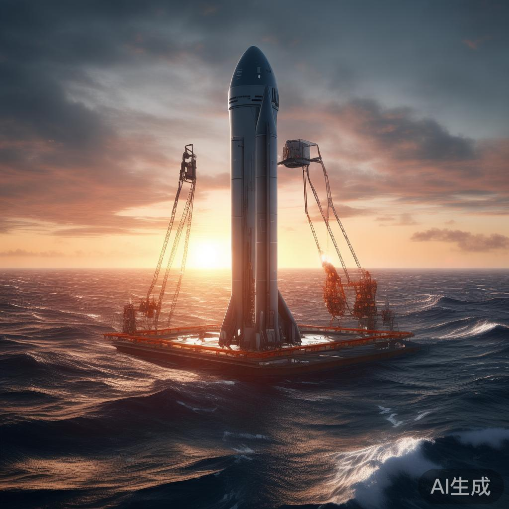
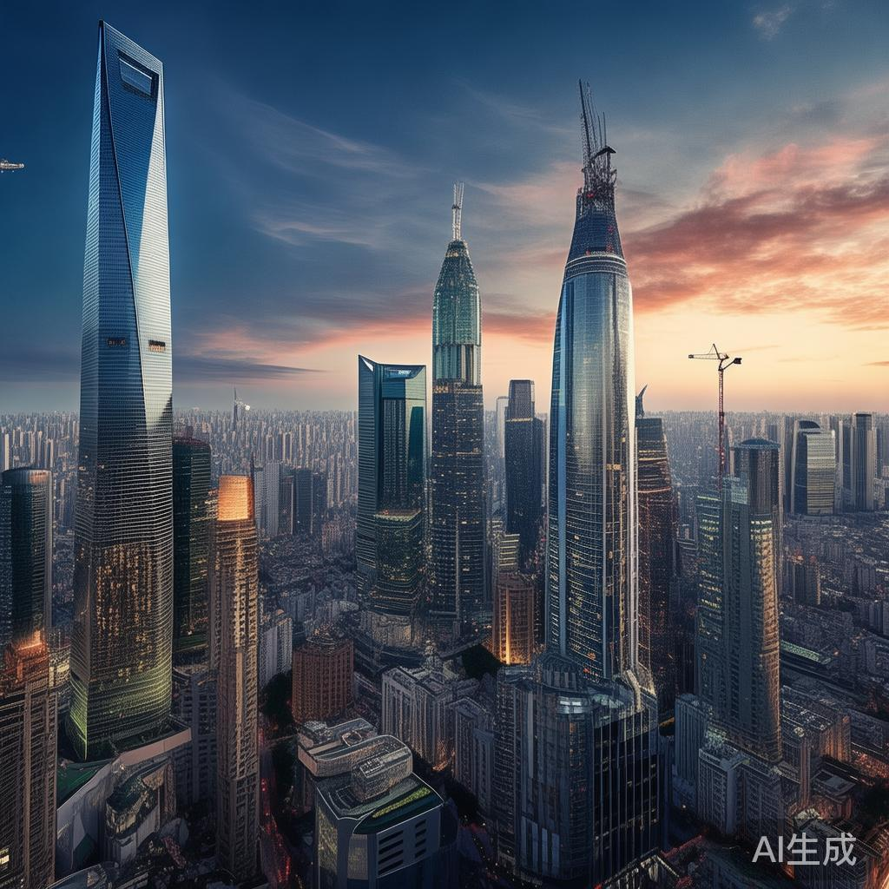
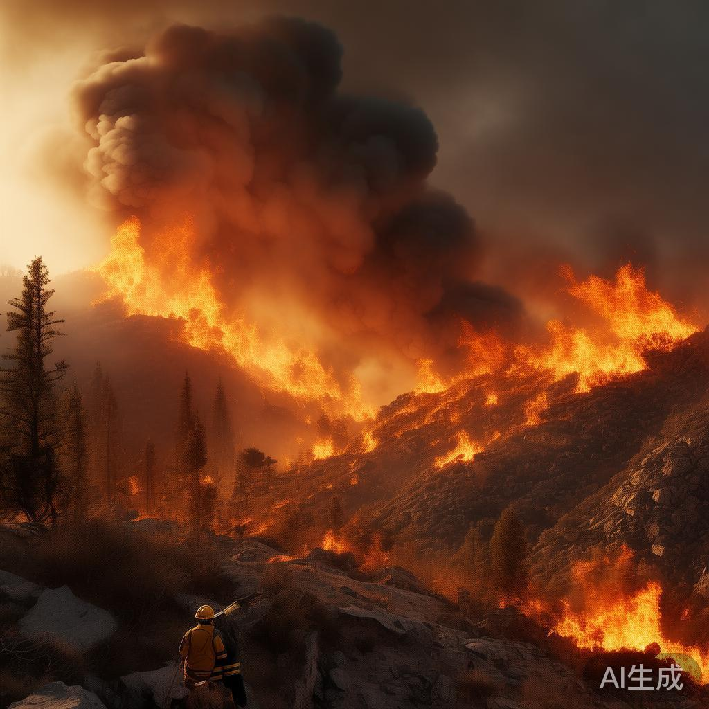
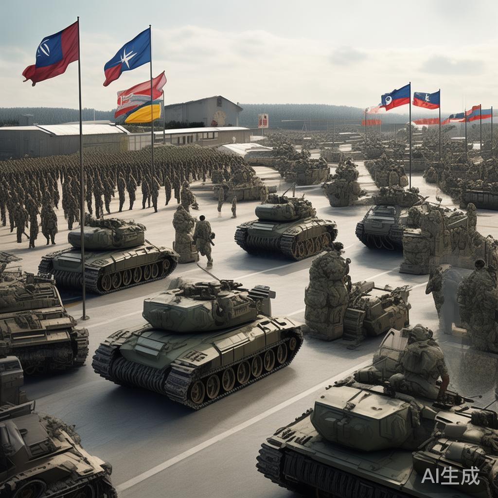
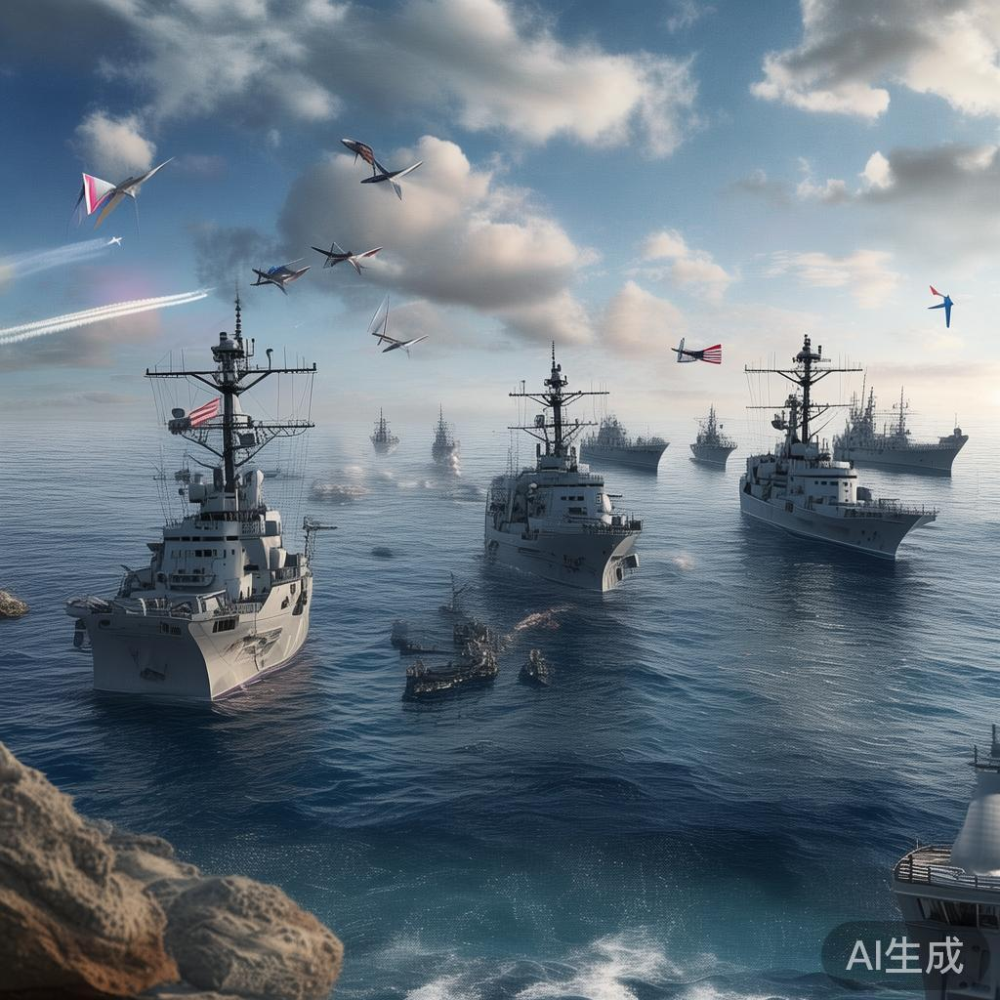
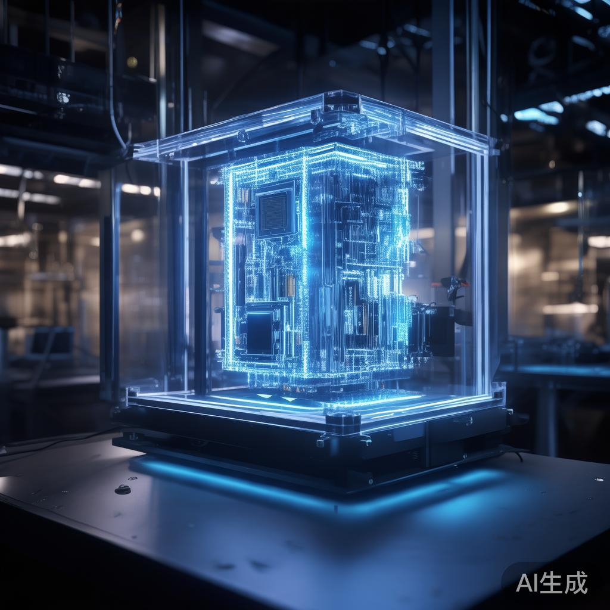
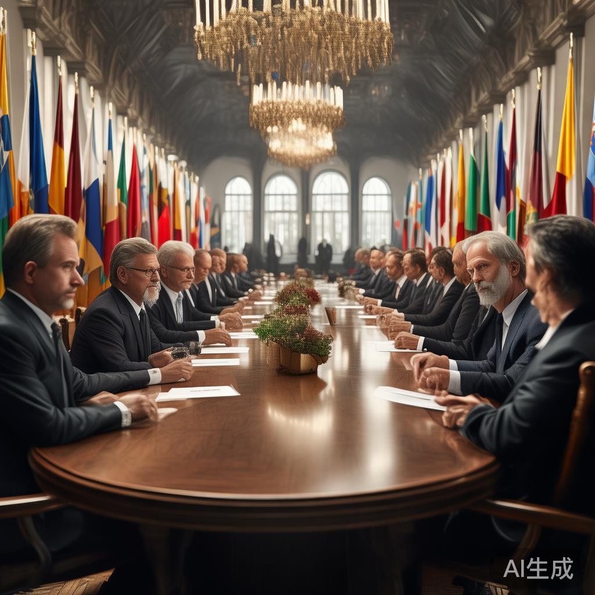
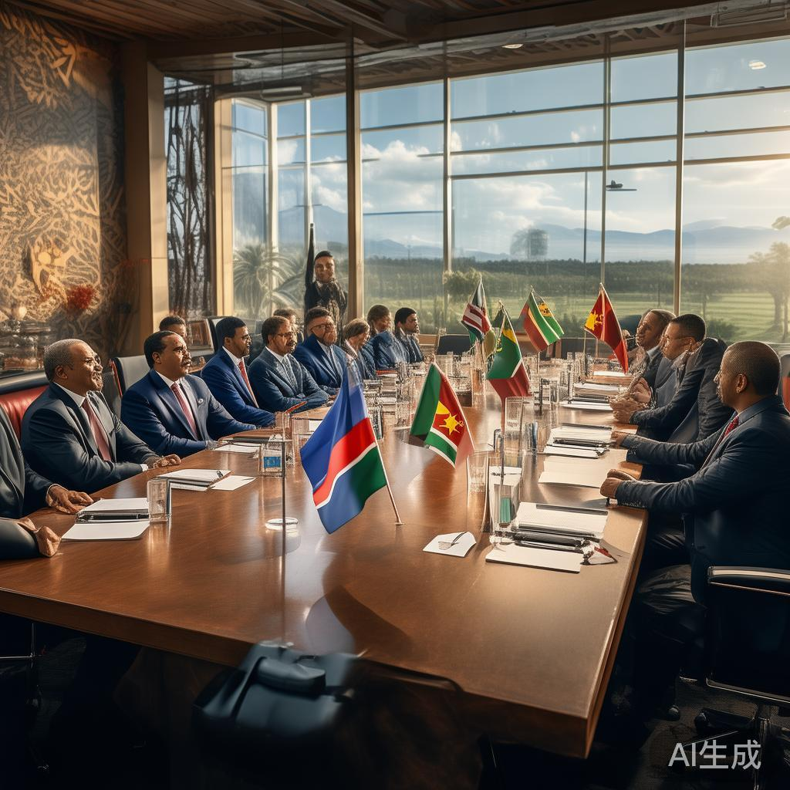
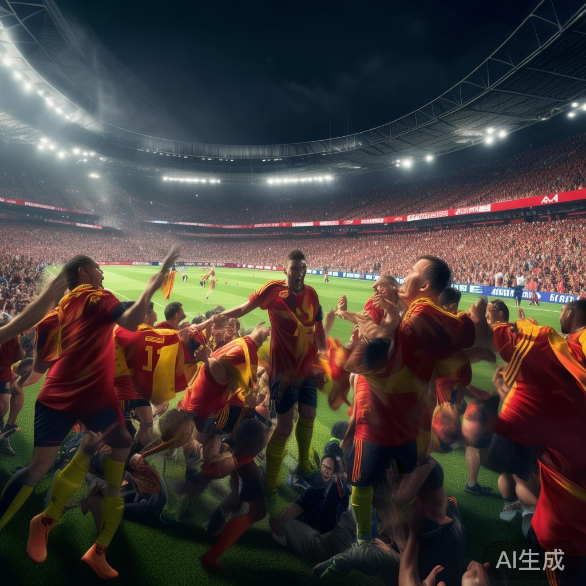
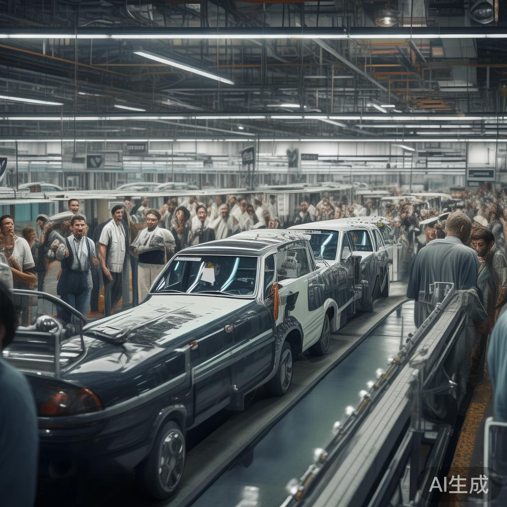

01
联合国停火决议进入第二天 加沙人道主义援助开始恢复
联合国停火决议通过后的第二天，加沙地带人道主义援助通道正式重新开放。世界粮食计划署车队从埃及边境进入加沙，为当地平民运送食品、医疗物资和饮用水。联合国秘书长古特雷斯表示，'这是恢复和平的第一步'，但强调实现永久停火仍需各方共同努力。以色列军方表示将'配合人道主义停火'，但保留对恐怖袭击的自卫权。
国际
联合国停火决议通过后的第二天，加沙地带人道主义援助通道正式重新开放。世界粮食计划署车队从埃及边境进入加沙，为当地平民运送食品、医疗物资和饮用水。联合国秘书长古特雷斯表示，'这是恢复和平的第一步'，但强调实现永久停火仍需各方共同努力。以色列军方表示将'配合人道主义停火'，但保留对恐怖袭击的自卫权。
英伟达宣布Blackwell Ultra GPU已进入全面量产阶段，但台积电3nm工艺产能紧张导致供不应求。分析师预计新芯片缺货情况将持续至明年第一季度。黄仁勋在财报电话会上表示，AI算力需求'远远超出预期'，公司正在与代工厂密切合作扩产。英伟达股价在盘后交易中上涨超过5%。
比特币价格今日重返10万美元关键心理位，加密货币市场整体情绪明显回暖。分析师认为美联储9月降息预期升温是本轮上涨的主要驱动力。机构资金持续流入比特币ETF，灰度等主要产品的净流入量创一个月新高。以太坊同步上涨突破3500美元。
法国国民议会选举首轮投票结束，极右翼国民联盟以34%的得票率领先所有政党。马克龙所在的复兴党仅获得21%选票，排名第三。执政联盟面临严重挫折，巴黎多地爆发抗议示威。左翼联盟人民阵线获得29%选票，位居第二。选举最终结果将于7月12日揭晓。

SpaceX宣布其最新型无人机船已升级完成，可以同时回收星舰的两枚助推器。这项技术突破将显著降低发射成本，预期可将星舰每次发射成本降至500万美元以下。马斯克表示这将是太空探索'完全可重复使用'的最后一环。SpaceX同时宣布获得日本JAXA的月球补给合同。

国家统计局公布上半年经济数据，GDP同比增长5.8%，增速比一季度加快0.2个百分点。高技术制造业投资增长12.5%，新能源汽车、锂电池和光伏产品出口增长强劲。消费对经济增长的贡献率超过60%。经济学家预计全年有望实现5.5%左右的增长目标。

欧洲南部热浪进入第三周，意大利南部多地发生山林大火，消防部门出动超过2000名消防员参与灭火。希腊、土耳其和西班牙同样面临火灾风险，多国请求欧盟民防机制支援。欧洲多家医院报告因高温相关疾病就诊人数增加三倍。气象预报显示热浪可能持续至下周。

北约在布鲁塞尔宣布将向波兰永久增派一万名士兵，强化北约东翼防御。美国将派遣4000人，德国2000人，英国和加拿大各1500人。这是冷战以来北约最大规模的军事部署调整。俄罗斯外交部发言人扎哈罗娃表示，北约'正在将欧洲推向战争边缘'，俄方将采取'对等回应措施'。
苹果Vision Pro 3今日在全球Apple Store开启首销，多地出现排队抢购人潮。售价2499美元的新款头显供货充足，店内可直接购买无需预约。苹果CEO库克在东京表参道店接受采访时表示，'空间计算正在改变人们的工作和生活方式'。App Store下载量突破百万的应用已超过200款。

美国和菲律宾在南海海域启动代号'肩并肩'的年度联合军事演习，参演兵力超过1.5万人，创历史新高。演习内容包括反舰导弹实弹射击和两栖登陆演练。中国南部战区派舰艇全程跟踪监视，并在演习区域进行例行战备巡逻。中国外交部敦促域外国家不要在南海'挑事生非'。
欧佩克+视频会议达成新减产协议，沙特承诺额外自愿减产100万桶/日，以提振低迷的国际油价。协议有效期至2027年6月。俄罗斯同意限制石油出口，但保留根据市场情况调整的权利。国际油价应声上涨3%，布伦特原油重回75美元上方。航空股和能源股普遍上涨。

谷歌宣布其2000量子比特Willow处理器正式开放云服务试用，首批合作客户包括辉瑞、IBM和多家金融机构。企业可以通过谷歌云平台远程调用量子算力，用于药物分子模拟、金融风险计算和密码学研究。谷歌同时宣布将在加州建造世界最大的量子计算数据中心。

伊朗与伊核问题六国在维也纳举行恢复履约谈判以来的首次面对面会谈。伊朗代表团表示愿意讨论'所有悬而未决的问题'，但坚持要求解除所有制裁。美国谈判代表表示对话'具有建设性'，但拒绝对结果做出预测。欧盟外交与安全政策高级代表主持本轮会谈。
美联储最新褐皮书显示，美国经济整体保持温和增长态势，12个地区中有9个报告经济活动小幅扩张。消费支出保持韧性，劳动力市场供需趋于平衡。但企业报告工资和价格粘性依然较强，通胀压力未见明显缓解。分析师预计9月降息25个基点的概率超过70%。
日本石川县能登地区发生5.3级余震，震源深度约10公里，震感遍及北陆地区多条新干线一度降速运行。气象厅表示这是7月5日7.1级强震的正常余震序列，呼吁民众警惕山体滑坡风险。东京电力公司确认区域内核电站辐射监测数值无异常。

金砖国家合作机制扩员谈判在南非约翰内斯堡完成，沙特阿拉伯、伊朗和埃塞俄比亚的加入程序正式启动。克里姆林宫表示欢迎更多发展中国家参与合作。美国和欧盟对金砖机制扩员表示密切关注。中国外交部赞赏南南合作的新台阶。
斯坦福AI指数报告因将中国列为AI论文数量和专利申请第一大国而引发学术界争议。多位美国学者指出，中国统计口径过于宽泛，且论文质量仍落后于美国。报告显示，中国在图像识别和自动驾驶专利方面领先，美国在基础大模型和芯片设计领域保持优势。中美AI竞争格局日益复杂。

2026年世界杯四分之一决赛在洛杉矶展开争夺，西班牙以4比2战胜法国，晋级半决赛。法国队上半场2比1领先，但西班牙下半场连入三球完成逆转。19岁小将加维上演帽子戏法，当选全场最佳。另一场四分之一决赛中，德国通过点球大战6比5淘汰英格兰。半决赛西班牙将战德国。
发表在科学杂志上的最新研究发出严厉警告，北极冰盖可能在2035年夏季出现首次完全消融，比此前预测提前15年。研究基于过去十年卫星数据和海洋温度变化趋势，警告海平面上升风险将显著加速。格陵兰岛冰盖流失速度已是上世纪末的三倍，多国政府被呼吁紧急制定应对方案。

大众汽车关闭两家德国工厂和裁员3万人的计划进入第二天，工会IG Metall威胁发动无限期罢工。工会在沃尔夫斯堡总部组织大规模示威，超过5万名工人参与。大众管理层表示转型不可避免，承诺为每位被裁员工提供再就业培训。目前双方谈判陷入僵局。
💬 评论区